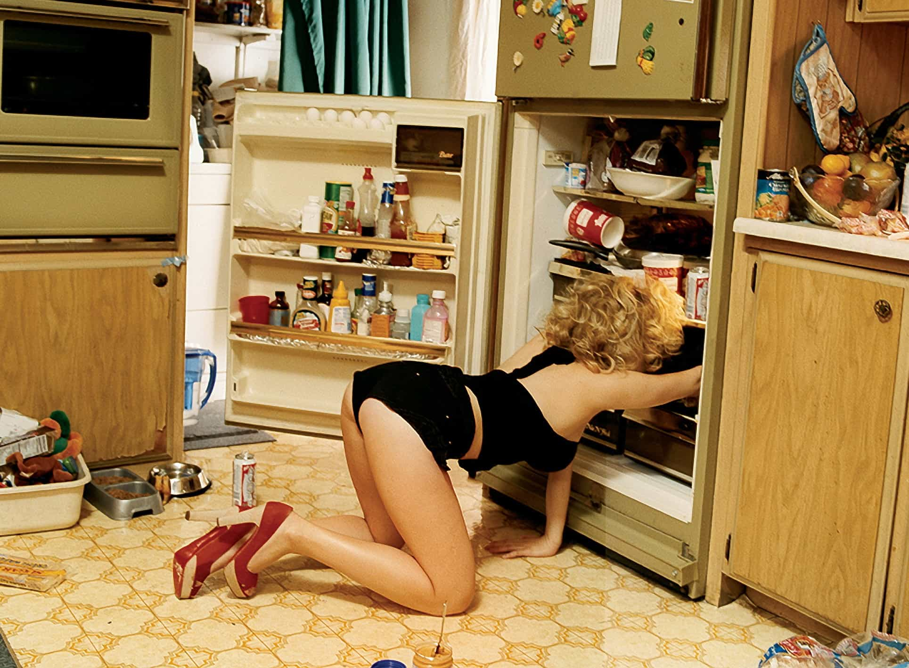

We are all slaves to reality, and at the end of the day, women are slaves to their own unique biological reality. When feminists blame the ‘patriarchy,’ what they are actually blaming is an observable reality. In reality, ‘patriarchy’ does not exist. It is a boogieman. What feminists are actually frustrated with is the fact that Mother Nature has internalized misogyny. It is Mother Nature that forces women to be 12 years a hottie. Men do not have a sell-by date, but women do.
Women, have a 12-year window (give or take) in order to capitalize on their attractiveness to get the man they wish to hitch themselves too. Before third-wave feminism, women were able to do this as there was a bounty of available, successful men to choose from. The system had allowed men to work, thrive in their careers, produce without being taxed to high heaven, and have access to jobs—as opposed to the current gynocentric society which does not support men and discourages men from attending colleges that have turned into feminist cesspools. With all of this, we see a culture with a declining birth rate and fertility, along with stagnant economies and a growing welfare state.
Women’s hypergamous nature today is allowed to run unrestrained. Even though institutions like marriage still exist, the contract has changed and it no longer restricts hypergamous tendencies nor controls them anymore. Marriage and family are no longer stable since there are no consequences for women—just No-Fault divorce. All the responsibilities are now placed on the man, and all benefits go towards the woman. Men are left holding the bag, when (not if) the ship sinks.
Women Win the Lottery at Around Age Eighteen

A front loaded life with the clock ticking down.
Women today, everywhere, squander their 12 years of being a hottie. When they hit The Wall by around age 30, they are left scrambling and trying to figure out, “Why are there no ‘good men?’”. ‘Good men’ is girl-code for money or men with money—their Christian Greys, their Chads. There are no ‘good men’ anymore because feminism has turned our society gynocentric, and when that happens men no longer have the means or incentives to become Christian Greys. Women have essentially shot themselves in not one, but both feet.
The women of today, once they are ready to ‘settle down’ at age 35+ (well-passed peak attractiveness) have nothing to offer high-status men. After riding the cock-carousel for the past 12-years, and having miles of dick in them, why would a high-status man invest in your ass at full value? A modern, Aging American Party-gurl at 30+, going up to a high-value man, trying to get him to commit, is like a car dealer trying to sell you a 1986 Chrysler LeBaron that has been rode hard for years, thousands of miles on the odometer, no tread on the tires, and telling you that it is brand new!
The problem for men is that there are no good women left since feminism has created a sea of entitled, worthless, bitter women that no man needs to take a risk on. And there are loads of manginas who enable these women, by going on social media and worshiping them with ‘likes’ and, “Oh gurl you’re so hot” even if the chick is a 5 or a landwhale. If you do this, you are part of the problem—propping up the egos of women who don’t deserve it.
Making You Addicted To Her

Women don’t care about their vagina, they only care about what it can get them.
The issue that a lot of women face, when they get older, is that the game that they play starts to get a lot harder. Women operate on the modus of trying to get the man addicted to her pussy. And the way that they try to get you addicted is to throw it at you, early and often. Once they get you to “fall in love” with them, it’s over. They “got you”. They’ll throw sex at you, kiss you, give blowjobs, and hand jibbers all day/all night, until you surrender your cock and balls by putting a ring on her finger.
The problem with this is that it only works (for the most part) on young guys who haven’t formed too many bonds, yet. Essentially, if a woman finds a dude who is a virgin or hasn’t had many relationships, he will bond well to her. Now, doing this with older men (more experienced) who have banged their fair share of snatch, doesn’t hold as well. What is the woman offering? Mostly her pussy, nothing new.
The Value of Modern Pussy
Understand that most women today are for day-trading. Not for going Long on.
Today, women have eroded their stock down to just their vagina. No verifiable virtue, morals, responsibility, restraint, charm, softness, rarely beautiful (dyke-cuts, landwhales, tattoos, clown hair). What do they demand from men? To pound the BUY button. Offering men full-on risk in exchange for everything they have (their time, commitment, money, freedom) is not a fair trade.
Men will pump and dump. That is easy to do today, as the price of pussy continues to be at all-time lows (if you avoid marriage). So long as women are on Tinder and other social media, trading their sex for Facebook ‘likes’, dollar beers, concert tickets, Netflix and Chill sessions, and Gina Tingles, men will be there to provide the pipe—but not the paper. By the time they find that “deal”, their end has already been tarnished by miles of dick and bukkake pile-drivers.
In the foreseeable future we will continue to see economic decline, waning birth rates, rising divorce, men in poverty, increase in single moms, violent crime, married/single or middle-aged female teachers sleeping their students or teens, increase in suicides. This all will continue if our culture does not acknowledge human sexual dimorphism and the fact that men and women are different (not equal from a biological standpoint).
Read More: Lindsay Lohan Becomes A “Chaste” Muslim Woman After Spending Years On The Hollywood Cock Carousel